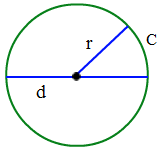
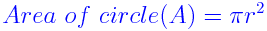

Circle Formula:
Circle is a shape and is defined as the set of points in a plane that are placed
at equal distance from a single point called the center of the circle.
Circle Formula is used to calculate the diameter, area and circumference of a
circle. The distance between any of the points and the center is called the
radius.
Any line that passes through the center of the circle and connects two points on
the boundary of the circle is called the diameter of the circle.
Half the diameter is the radius of the circle. Area of the circle is the amount
of space occupied by the circle and the length of the boundary of the circle is
called its circumference.
Where,

r is the radius of the circle.
d is the diameter of the circle.
c is the circumference of the circle.
The Circle Formulas are given as
